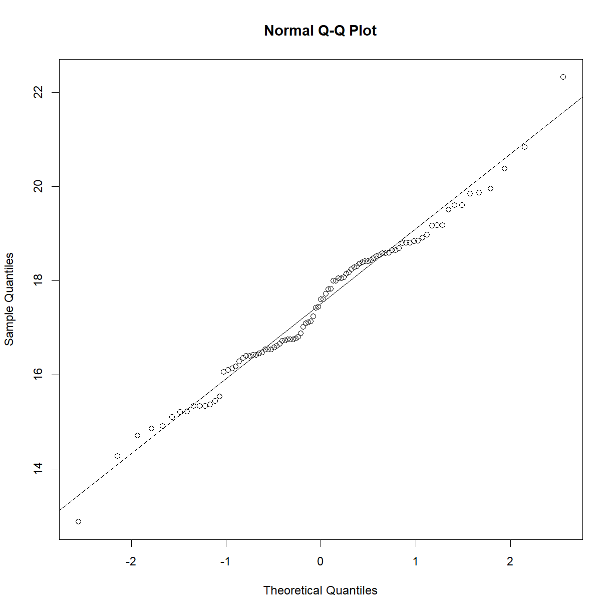
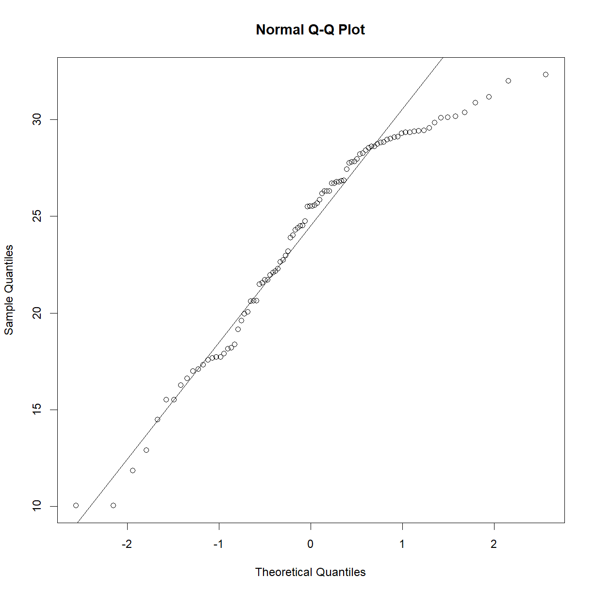
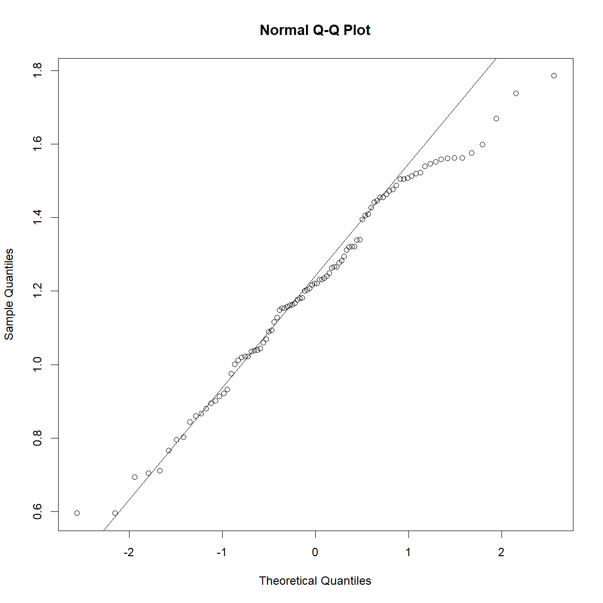
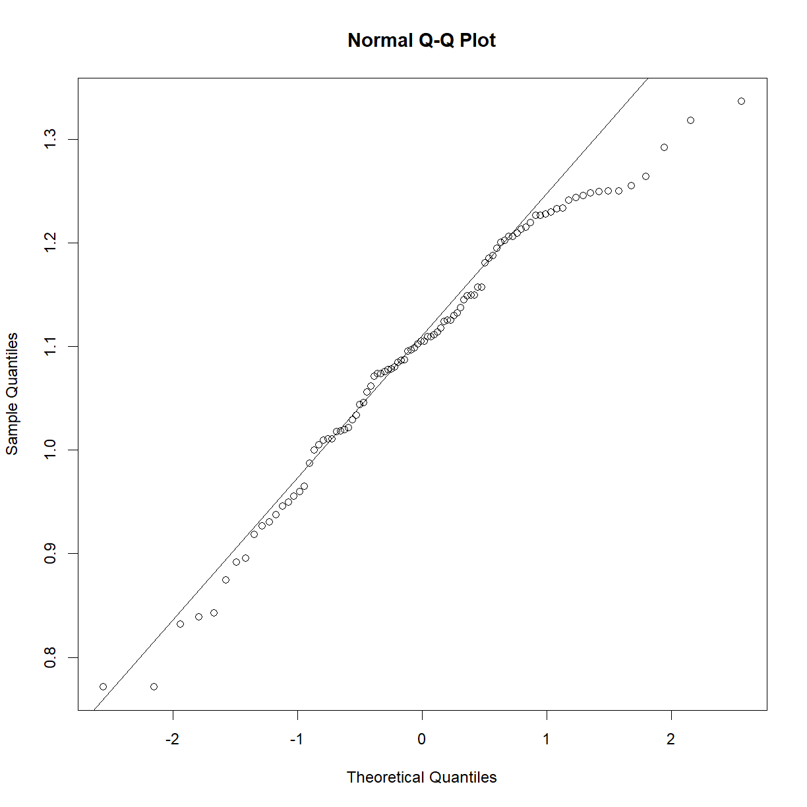

Distributions and Normality -- Additional Detail
Overview
Class Date: 9/12/2023 -- On Your Own
Teaching: 90 min
Exercises: 30 minQuestions
Is there a statistical method for assessing normality?
What options do I have if my data is not normally ditributed?
Objectives
Be able to conduct a Shapiro-Wilk test in R, but also understand the limitations of this test.
Carry out simple reversible data transformations to normalize data.
Know where to go for more advanced data transformations.
On Your Own
In Class we looked at visual/qualitative methods for assessing normality using histograms, density plots, and Q-Q plots. These remain the most common ways to make an initial assessment of normality before diving into statistical analysis. There are statistical tests for normality, and we will look at one of them, but these have caveats. The bottom line is this: it is always a good idea to look at how close your sample falls to the normal distribution. In the best case scenario, you can correct any deviations (see the section on transformations below). In the worst case you will be aware of any un-correctable deviations from normality and be in a position to apply an appropriate level of skepticism to P values that are borderline significant when a statistical test that makes the normality assumption is employed.
The Shapiro-Wilk test for normality
While I will re-emphasize that it is always good to look at your data first, there is a statistical test for normality called the Shapiro-Wilk test, originally published in 1965. The Shapiro-Wilk test sets up the following hypotheses:
\(H_0\): The sample belongs to a normal distribution.
\(H_1\): The sample does not belong to a normal distribution.
In essence, the test looks for statistical deviation from the corresponding theoretical normal distribution. First, let’s make sure we have our data loaded from the mouse diet study that we examined In Class:
data.diet <- read.delim("./data/b6.aj.hfhs.diet.txt")
b6 <- data.diet[data.diet$strain == "C57BL/6J",]
We can run the Shapiro-Wilk test in R using the shapiro.test() function:
?shapiro.test
The only argument that we need to pass to the test is a numeric vector containing our data of interest:
shapiro.test(b6$bw_start)
Shapiro-Wilk normality test
data: b6$bw_start
W = 0.98847, p-value = 0.5732
As we may have suspected from looking at the Q-Q plot and distributions In Class, the P-value is comfortably far from significance, and we can accept the null hypothesis that the sample is drawn from a normal distribution. As a demonstration, the exponential of this data is clearly not normal:
qqnorm(exp(b6$bw_start))
qqline(exp(b6$bw_start))

shapiro.test(exp(b6$bw_start))
Shapiro-Wilk normality test
data: exp(b6$bw_start)
W = 0.56719, p-value = 2.251e-15
Now that we have the tools, a question to consider: is it worth running a statistical test for normality?
To test or not to test
When you start to read about testing normality, you get a lot of hand-wavy answers that amount to “just look at the Q-Q plot”. Is there value in running something like the Shapiro-Wilk test?
The best answer is probably something like “not really, but it doesn’t hurt”. The problem with normality tests is that, if you have a large sample size, t-tests and other tests that assume a normally distributed sample tend to be quite robust even if your data is not that close to normal. On the other hand, the Shapiro-Wilk test, while one of the best-powered normality tests, is still under-powered for small sample sizes, which are the only cases where t-tests tend to under perform. See a detailed discussion in this paper.
At the risk of excessive repitition, it is always good to look at your data before running your analyses. A quick Q-Q plot will tell you whether your data is dramatically different from normality (in which case you may want to run a transformation; see the next section). That said, a statistical test like the Shapiro-Wilk test is not likely to tell you whether your data is meaningfully non-normal beyond what the Q-Q plot can divulge. A highly statistically significant answer will be obvious in the Q-Q plot, and a close answer should, at most, make you a bit more skeptical of your 0.049 t-test p-value (which you should be anyway).
Transforming highly non-normal data
So what happens if your data is clearly non-normal? Let’s look at plasma triglycerides for our C57BL/6 mice:
qqnorm(b6$TG)
qqline(b6$TG)

shapiro.test(b6$TG)
Shapiro-Wilk normality test
data: b6$TG
W = 0.83851, p-value = 7.657e-09
This sample looks to be clearly non-normal. In this case the data has a somewhat characteristic shape, with both low and values higher than expected from a normal distribution. What happens if we examine normality of the log of triglycerides?
qqnorm(log(b6$TG))
qqline(log(b6$TG))

shapiro.test(log(b6$TG))
Shapiro-Wilk normality test
data: log(b6$TG)
W = 0.97882, p-value = 0.1227
That’s much better! Now we can continue with our analysis using log(b6$TG) as our random variable, rather than the raw value of b6$TG. This is an ideal case, because taking the logarithm of a value is a reversible data transformation. We can easily reverse the process by raising e to the log(b6$TG) power (recall that by default, log() in R takes the natural logarithm of the input). Therefore, no information is lost when performing the transformation. Other reversible transformations include:
- square root: \(\sqrt{x}\)
- polynomial powers (\(x^2\))
- inverse (\(\frac{1}{x}\))
- exponential (\(e^x\))
The best reversible transformation is not always immediately obvious. You can just try a few until you find the one that gives the most normal outcome. However, in some cases you won’t be able to find a nice transformation that brings you closer to a normal distribution than you started with your raw data. You may also have outliers that are having an out-weighted effect. In these cases, you may need a more extreme measure. While we do not cover these options in detail, common approaches include using a Z-Score Normalization, a Rank Z Transformation, or Min-Max Scaling. These methods have different strengths and weaknesses, and tend to change some aspect of the data. For example, Min-Max Scaling suppresses the impact of outliers, while the Rank Z Transformation maintains data order, but forces a normal distribution and thus removes information about relative value.
Exercises
Assessing normality in the other strain
We looked above at the starting body weight sample for C57BL/6 mice. Repeat our analysis using the A/J strain. In particular,
- Plot the histogram with density for the sample and normal distributions
- Generate a Q-Q plot to compare the sample to the normal distribution.
- Conduct a Shapiro-Wilk test on the sample.
Solution
# First separate out the A/J data aj = data.diet[data.diet$strain == "A/J",] # calculate histogram, density and normal ranges to prepare for plotting hist.bw.aj <- hist(aj$bw_start, breaks=15, freq = F, plot = F, warn.unused = F) dens.bw.aj <- density(aj$bw_start) norm.x <- seq(min(aj$bw_start), max(aj$bw_start), length = 100) norm.y <- dnorm(x = norm.x, mean = mean(aj$bw_start), sd = sd(aj$bw_start)) # First calculate the range for the plot window size x.lim <- c(min(hist.bw.aj$mids, dens.bw.aj$x, norm.x), # find the lowest x value max(hist.bw.aj$mids, dens.bw.aj$x, norm.x)) # find the largest x value y.lim <- c(0, # we want to plot y from 0 in this case max(hist.bw.aj$density, dens.bw.aj$y, norm.y)) # find the largest x value # now plot all three on the same chart plot(hist.bw.aj, xlim = x.lim, ylim = y.lim, freq=F) lines(dens.bw.aj, col="black") lines(norm.x,norm.y, col = "blue")
# generate the Q-Q plot qqnorm(aj$bw_start) qqline(aj$bw_start)
# conduct the Shapiro-Wilk test shapiro.test(aj$bw_start)Shapiro-Wilk normality test data: aj$bw_start W = 0.98581, p-value = 0.3992

The weightier matter
While the starting body weight is important, what we really care about is the change in body weight following the diet. Examine the
bw_gainvariable. Can we use this directly? Is there a better metric to assess change in body weight?Solution
# examine Q-Q plots for B6 and AJ mice separately qqnorm(b6$bw_gain) qqline(b6$bw_gain)
shapiro.test(b6$bw_gain)Shapiro-Wilk normality test data: b6$bw_gain W = 0.93757, p-value = 0.0001893qqnorm(aj$bw_gain) qqline(aj$bw_gain)
shapiro.test(aj$bw_gain)Shapiro-Wilk normality test data: aj$bw_gain W = 0.94935, p-value = 0.001068# both are skewed. Try a log transformation: qqnorm(log(b6$bw_gain)) qqline(log(b6$bw_gain))
shapiro.test(log(b6$bw_gain))Shapiro-Wilk normality test data: log(b6$bw_gain) W = 0.88267, p-value = 3.692e-07qqnorm(log(b6$bw_gain)) qqline(log(b6$bw_gain))
shapiro.test(log(b6$bw_gain))Shapiro-Wilk normality test data: log(b6$bw_gain) W = 0.88267, p-value = 3.692e-07# That didn't work. What if we normalize to the starting body weight? qqnorm(b6$bw_gain/b6$bw_start) qqline(b6$bw_gain/b6$bw_start)
shapiro.test(b6$bw_gain/b6$bw_start)Shapiro-Wilk normality test data: b6$bw_gain/b6$bw_start W = 0.98215, p-value = 0.2167qqnorm(aj$bw_gain/aj$bw_start) qqline(aj$bw_gain/aj$bw_start)
shapiro.test(aj$bw_gain/aj$bw_start)Shapiro-Wilk normality test data: aj$bw_gain/aj$bw_start W = 0.95953, p-value = 0.005023# still not perfect. Let's try to transform the new data with a square root qqnorm(sqrt(b6$bw_gain/b6$bw_start)) qqline(sqrt(b6$bw_gain/b6$bw_start))
shapiro.test(sqrt(b6$bw_gain/b6$bw_start))Shapiro-Wilk normality test data: sqrt(b6$bw_gain/b6$bw_start) W = 0.97056, p-value = 0.02933qqnorm(sqrt(aj$bw_gain/aj$bw_start)) qqline(sqrt(aj$bw_gain/aj$bw_start))
shapiro.test(sqrt(aj$bw_gain/aj$bw_start))Shapiro-Wilk normality test data: sqrt(aj$bw_gain/aj$bw_start) W = 0.98504, p-value = 0.3549
Still not perfect, but this may be one of those cases where there isn’t a clean reversible transform. I would probably be comfortable going forward with the slightly skewed data and being congnizant of the problem when running my t-test, particularly given that we have nearly 100 observations in each sample, making the t-test more robust.


Grand challenge
The “Normal Population Distribution” and “Sampling Distribution” charts that we looked at In Class were both drawn in directly in R. Here they are again for reference:
Today’s Grand Challenge: reproduce as many elements of these charts as you can!
*Note – this one is more “for fun”, and to demonstrate the power and versatility of R base graphics. Don’t spend a whole afternoon trying to get every detail perfect (unless you really want to!).
Hint – list of functions used
- arrows()
- axis()
- dev.off()
- dnorm()
- expression()
- mtext()
- par()
- paste()
- plot()
- png()
- polygon()
- rgb()
- seq()
- text()
- title()
Solution
# --------------------------------------- # Normal Population Distribution # Define set of points and corresponding points on normal distribution x <- seq(0,8,0.01) y <- dnorm(x, mean = 4, sd = 1) # initiate PNG file png(filename = "results/population-distribution.png", width = 750, height = 525, res = 150) (cex = 0.75, # default font size mar = c(7,5,2,2)) # increase margin sizes # Plot normal distribution plot(x, y, type = "l", # plot the distribution as a line chart bty = "l", xaxt = "n", # only use L shaped frame and turn off axes xlab = "", ylab = "") # Axis Labels axis(side = 1, at = 0:8, labels = c(expression(mu-4*sigma), expression(mu-3*sigma), expression(mu-2*sigma), expression(mu-sigma), expression(mu), expression(mu+sigma), expression(mu+2*sigma), expression(mu+3*sigma), expression(mu+4*sigma))) mtext("Phenotype Value", side = 1, line = 4, font = 2, cex = 0.75) mtext("Probability Density", side = 2, line = 3.5, font = 2, cex = 0.75) # Add title title(main = "Normal\nPopulation\nDistribution", font = 2, # plot title in bold line = -3, adj = 0.03) # positioning on left inside plot region # add text identifying variables text(x = 5, y = c(.4,0.37, 0.31), adj = 0, labels = c(expression(paste(mu, " = ")), expression(paste(sigma, " = ")), expression(paste(N, " = ")))) text(x = 5.6, y = c(0.40,0.37, 0.34, 0.31), adj = 0, labels = c(expression(paste("population mean")), expression(paste("population standard")), expression(paste("deviation")), expression(paste("population size")))) # Fill in curve areas col.fill <- rgb(0,0,1,0.2) polygon(c(x[x>=6], 6), c(y[x>=6], y[x == max(x)]), border = NA, col = col.fill) polygon(c(x[x<=2], 2), c(y[x<=2], y[x == min(x)]), border = NA, col = col.fill) polygon(c(x[x>=5], 5), c(y[x>=5], y[x == max(x)]), border = NA, col = col.fill) polygon(c(x[x<=3], 3), c(y[x<=3], y[x == min(x)]), border = NA, col = col.fill) polygon(c(x[x>=4], 4), c(y[x>=4], y[x == max(x)]), border = NA, col = col.fill) polygon(c(x[x<=4], 4), c(y[x<=4], y[x == min(x)]), border = NA, col = col.fill) # add arrows and data intervals arrows(x0 = 3, y0 = 0.18, x1 = 5, code = 3, # draw arrow heads at both ends angle = 25, length = 0.07) # arrow head angle and length arrows(x0 = 2, y0 = 0.03, x1 = 6, code = 3, # draw arrow heads at both ends angle = 25, length = 0.07) # arrow head angle and length text(4, 0.2, "68.3% of data", cex = 0.85) text(4, 0.05, "95.5% of data", cex = 0.85) # turn of graphics device dev.off() # --------------------------------------- # Sampling Distribution # Define set of points and corresponding points on normal distribution x <- seq(0,8,0.01) y.pop <- dnorm(x, mean = 4, sd = 2) y <- dnorm(x, mean = 4, sd = 1) x.lim <- c(min(x), max(x)) # x plot limits y.lim <- c(0, max(c(y,y.pop))) # y plot limits # initiate PNG file png(filename = "results/sampling-distribution.png", width = 750, height = 525, res = 150) # windows() par(cex = 0.75, # default font size mar = c(5,5,2,3)) # increase margin sizes # Plot population distribution plot(x, y.pop, type = "l", # plot the distribution as a line chart lty=2, col = "blue", # plot population in dotted blue bty = "l", xaxt = "n", # only use L shaped frame and turn off axes xlab = "", ylab = "", # no axis labels xlim = x.lim, ylim = y.lim) # add sampling distribution lines(x, y, col = "black") # Axis Labels axis(side = 1, at = 0:8, labels = rep("",9), cex = 0.75) text(x = 0:8, y = -0.055, xpd = NA, cex = 0.75, labels = c(expression(mu[x]-4*SE[x]), expression(mu[x]-3*SE[x]), expression(mu[x]-2*SE[x]), expression(mu[x]-SE[x]), expression(mu[x]), expression(mu[x]+SE[x]), expression(mu[x]+2*SE[x]), expression(mu[x]+3*SE[x]), expression(mu[x]+4*SE[x]))) mtext(expression(paste("Sample Mean, ", bar(x))), side = 1, line = 3, font = 2, cex = 0.75) mtext("Probability Density", side = 2, line = 3, font = 2, cex = 0.75) # Add title title(main = "Sampling\nDistribution", font = 2, # plot title in bold line = -2, adj = 0.03) # positioning on left inside plot region # add text identifying variables x.pos <- 5.2 x.off <- 0.9 y.pos <- seq(0.4, by = -0.028, length = 15) text(x = x.pos, y = y.pos[c(1:2,4:6,8)], adj = 0, xpd = NA, labels = c(expression(paste(phantom(E),mu[x], " = ")), expression(paste(phantom(E[x]),sigma, " = ")), expression(paste(phantom(E[x]),N, " = ")), expression(paste(phantom(Sn),n, " = ")), expression(paste(SE[x]," = ")), expression(paste(phantom(SE[x])," = ")))) text(x = x.pos + x.off, y = y.pos[c(1:6,8)], adj = 0, xpd = NA, labels = c(expression(paste("sampling mean")), expression(paste("population standard")), expression(paste("deviation")), expression(paste("population size")), expression(paste("sample size")), expression(paste("standard error of ",mu[x])), expression( paste(" ", frac(sigma,sqrt(n)), sqrt(frac(N-n,N-1))%~~%frac(sigma,sqrt(n)))))) # Label population distribution text(x = 1.3, y = 0.104, col = "blue", srt = 34, cex = 0.75, labels = "Population Distribution") # turn of graphics device dev.off()


Key Points
Use shapiro.test() to perform at Shapiro-Wilk test of normality. However, the power of the test is such that a negative result can eitehr indicate insufficient sample size or lack of normality.
Simple manipulations such as taking the logrithm or the square root of a sample can reversibly transform the observations into a more normal distribution.